卷积神经网络
学习内容基于：Pytorch框架与经典卷积神经网络与实战
CNN卷积神经网络算法原理
全连接神经网络
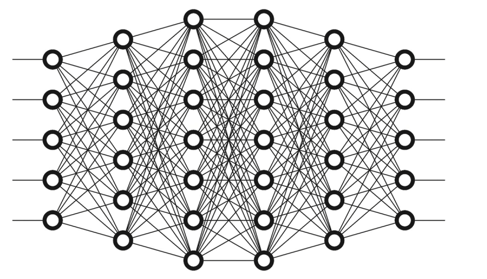输入层是我们输入的数据，这里看到的第一列节点并不是输入层，中间为隐藏层。
输入层就像X（自变量），模型或者说这些网络就是F（函数），我们得到的输出就是Y（因变量）。
为什么要使用激活函数
在神经网络中使用激活函数的根本原因是引入非线性，从而使模型能够拟合和表达复杂的函数关系。如果没有激活函数，神经网络无论堆叠多少层，本质上都是一个线性模型，能力极其有限。多层线性变换的叠加依然是线性变换，最终的模型只能拟合直线/平面，完全无法处理复杂的数据模式
Sigmoid激活函数
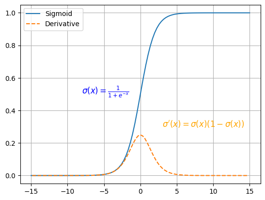优点：简单、非常适用分类任务。
缺点：反向传播训练时有梯度消失的问题；输出值区间为(0,1)，关于0不对称；梯度更新在不同方向走得太远，使得优化难度增大，训练耗时。
Tanh激活函数
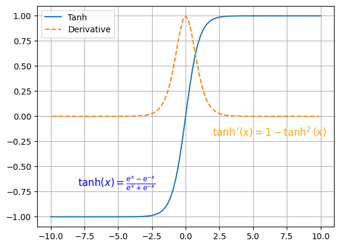优点：解决了Sigmoid函数输出值非0对称的问题，训练比Sigmoid函数快，更容易收敛
缺点：反向传播训练时有梯度消失的问题，Tanh函数和Sigmoid函数非常相似。
ReLU激活函数
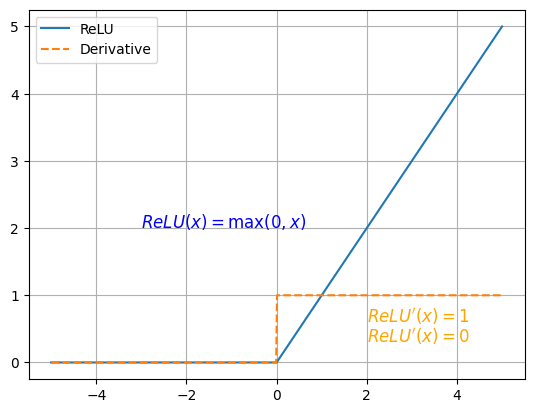优点：解决了梯度消失的问题；计算更为简单，没有Sigmoid函数和Tanh函数的指数运算
缺点：训练时可能出现神经元死亡
Leaky ReLU激活函数
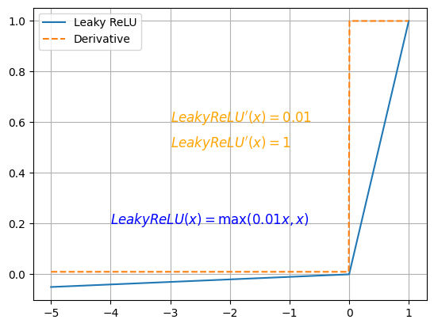优点：解决了ReLU的神经元死亡问题
缺点：无法为正负输入值提供一致的关系预测(不同区间函数不同)
前向传播
前向传播是神经网络中数据从输入层依次流向输出层的过程，它的核心目标是根据当前的模型参数（权重和偏置）计算出预测结果。
前向传播就是“把输入数据依次喂给每一层，经过线性计算 + 激活函数，逐层输出，最后得到预测值”的过程。
损失函数
均方误差
| 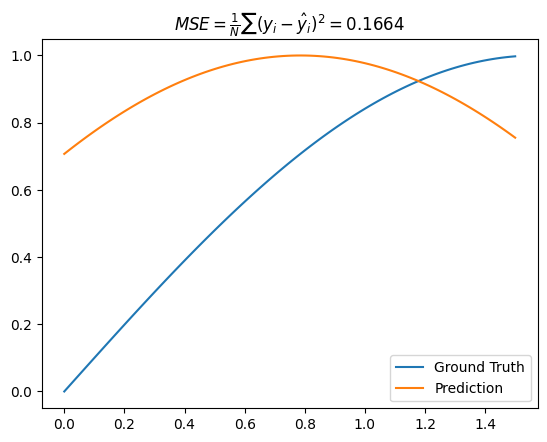 | 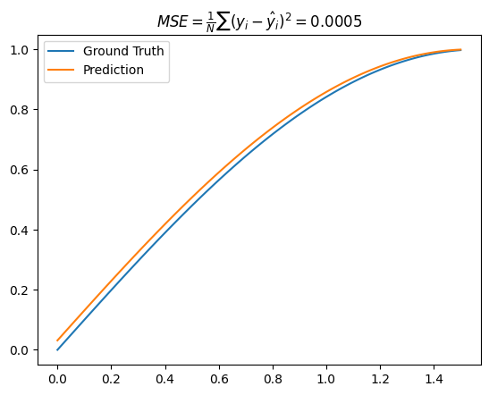 |
|---|
前面有可能有出现1/2，那只是为了方便求导，都是均方误差。
梯度下降法
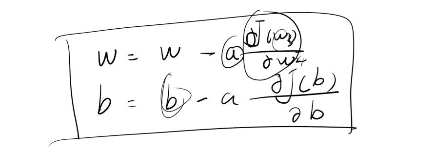 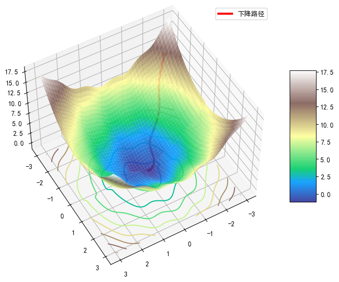全连接神经网络在图片中存在的问题
1. 参数量巨大
- 全连接层的每一个神经元都与上一层的所有神经元相连。
- 对于图片来说，输入通常是高维的，例如一张 224×224 的 RGB 图片就是 224×224×3 = 150,528 个输入特征。
- 假设第一层有 1000 个神经元，那么权重数量就是 150,528 × 1000 ≈ 1.5 亿个参数！
- 问题：参数太多 → 容易过拟合 → 训练时间长 → 需要大量显存。
2. 忽略空间结构
- 图片是二维或三维（RGB）的网格数据，有局部空间相关性（邻近像素往往相关）。
- 全连接层把图片“拉平”成一维向量，然后再进行矩阵乘法。
- 问题：丢失了图片的空间信息（如边缘、纹理、形状），无法有效捕捉局部特征。
3. 缺乏平移不变性
- 图像中物体的位置可能变化。
- 全连接网络对输入的每个位置都固定，物体稍微移动，输出可能完全不同。
- 问题：无法自动识别图像中的平移或局部位移，泛化能力差。
4. 计算效率低
- 全连接层计算复杂度高（矩阵乘法量大）。
- 对高分辨率图像，训练和推理速度都很慢。
- 对比卷积神经网络（CNN），后者通过卷积核共享权重大幅减少计算量。
5. 不适合捕捉层次特征
- 图片的特征是有层次结构的：边缘 → 纹理 → 形状 → 对象。
- 全连接层一次性处理所有像素，无法自然学习层次特征。
- CNN 则通过卷积和池化层逐步抽象特征，更符合视觉认知规律。
卷积、步幅、填充、池化
这部分请看：
https://735690757.github.io/python/pytorch
经过卷积后特征图大小
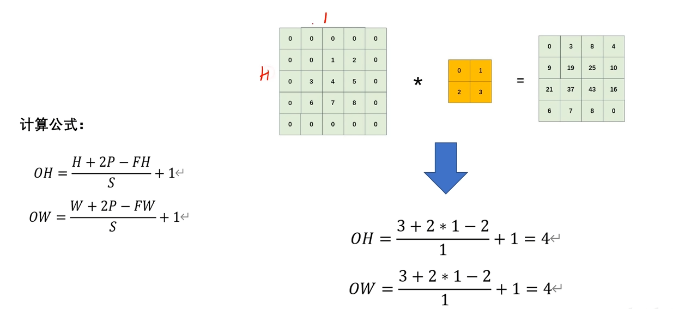FH：卷积核（filter）的高度（Filter Height）
FW：卷积核的宽度（Filter Width）
C_in：输入通道数（Input Channels）
C_out：输出通道数（Output Channels）
S：步幅（Stride）
P：填充（Padding）
如果算出来是小数，一般是向下取整。
LeNet与AlexNet原理
LeNet-5诞生背景
简单来说，LeNet-5的诞生背景是为了解决手写数字识别这一实际应用问题，它是世界上首个成功商用的卷积神经网络，奠定了现代深度学习的基础。
LeNet-5网络结构
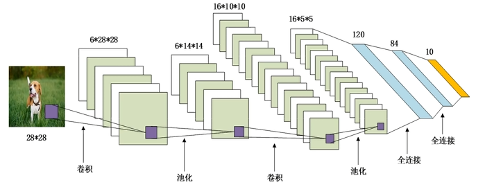- 输入1 * 28 * 28
- 5 * 5 卷积（6），填充2
- 2 * 2 平均池化层，步幅2
- 5 * 5 卷积（16），填充0
- 2 * 2 平均池化层，步幅2
- 全连接（120）
- 全连接（84）
- 全连接（10）
再强调一下：
这个计算公式非常重要。
AlexNet诞生背景
在算力达到临界点、大数据已经就位的环境下，一个古老但曾被忽视的算法（深度学习/卷积神经网络）迎来了证明自己的最佳时机。AlexNet不仅仅是一个优秀的模型，它更是一个时代的开创者，是人工智能发展史上的一个关键转折点。
AlexNet网络结构
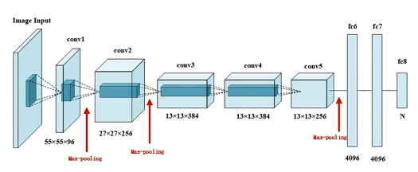5层卷积，3层全连接，共8层，激活函数使用ReLU。
- 输入3 * 227 * 227（？这个可能有问题）
- 11 * 11 卷积（96），步幅4，ReLU
- 3 * 3 最大池化，步幅2
- 5 * 5 卷积（256），填充2，ReLU
- 3 * 3最大池化，步幅2
- 3 * 3 卷积（384），填充1，ReLU
- 3 * 3 卷积（384），填充1，ReLU
- 3 * 3 卷积（256），填充1，ReLU
- 3 * 3最大池化，步幅2
- 全连接（4096）
- 全连接（4096）
- 全连接（10）
这里在全连接层有很多的参数，参数太多容易过拟合，我们引入了Dropout操作。
图像增强 - 水平翻转
图像增强 - 随机裁剪
图像增强 - PCA
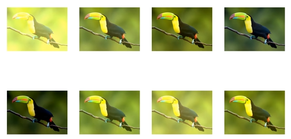| 方面 | 描述 |
|---|---|
| 核心思想 | 利用PCA找到图像颜色的主要变化方向，并沿这些方向添加随机扰动来模拟光照变化。 |
| 目的 | 增强模型对颜色和光照变化的鲁棒性，是一种高效的数据增强手段。 |
| 优点 | 变化方式基于图像自身的统计特性，生成的图像颜色变化自然、合理。 |
| 缺点 | 计算成本相对较高（需要对每张图或每批图做PCA）。 |
| 遗产 | 是AlexNet的一个创新点，启发了对颜色增强的重视，但已被更简单高效的方法所取代。 |
LRN正则化
这是一个针对通道间的计算
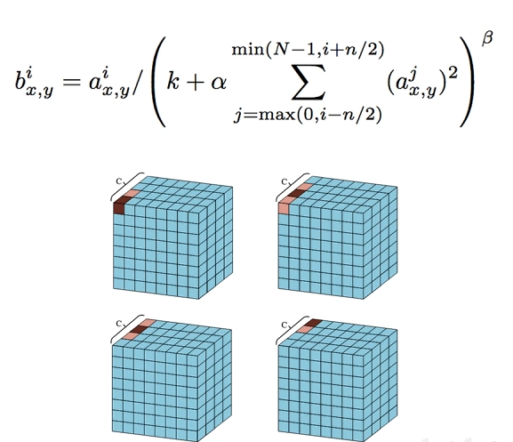尽管LRN是AlexNet的一个关键创新，但在后续更深、更先进的网络（如VGG、ResNet）中，它几乎被完全弃用了。主要原因如下：
- 效果有限且不稳定：后续研究发现，LRN带来的性能提升非常微弱，甚至有时不稳定。其正则化效果远不如Dropout和Batch Normalization（BN） 那样显著和可靠。
- 被更好的技术取代：
- Dropout：通过随机断开神经元连接来防止过拟合，更为直接有效。
- Batch Normalization（批归一化）：这是革命性的技术。BN对整个Batch的每个通道进行归一化（均值为0，方差为1），极大地改善了梯度流动，加速了训练，同时本身也具有轻微的正则化效果。BN的效果远超LRN，并且已经成为现代深度网络的标准组件。
- 增加计算开销和超参数：LRN引入了额外的计算量，并且
k, α, β, n这些超参数需要调优，增加了模型设计的复杂性。
重叠池化
与LRN类似，重叠池化在现代深度学习架构中也已经不常用了。
- 计算成本更高：由于存在重叠，为了得到相同尺寸的输出特征图，重叠池化需要进行更多次池化操作。例如，将
5x5降采样到2x2，非重叠池化 (2x2, stride=2) 需要4次操作，而重叠池化 (3x3, stride=2) 也需要4次操作，但每次操作的窗口更大，计算量稍高。 - 被更有效的技术取代：如今，防止过拟合和提升性能的重任更多地由 Batch Normalization、更深的网络结构（如ResNet的残差连接）、更先进的优化器 和 Dropout 等方法来承担。
- 设计趋势变化：现代网络有时甚至会完全摒弃池化层，转而使用步长大于1的卷积（Strided Convolution） 来同时实现特征提取和降采样，这被认为能提供更大的模型容量和灵活性。
LeNet实战
模型
class LeNet(nn.Module):
def __init__(self, *args, **kwargs) -> None:
super().__init__(*args, **kwargs)
self.block = nn.Sequential(
nn.Conv2d(in_channels=1, out_channels=6, kernel_size=5, stride=1, padding=2),
nn.Sigmoid(),
nn.AvgPool2d(kernel_size=2, stride=2),
nn.Conv2d(in_channels=6, out_channels=16, kernel_size=5, stride=1, padding=0),
nn.Sigmoid(),
nn.AvgPool2d(kernel_size=2, stride=2),
nn.Flatten(),
nn.Linear(in_features=400, out_features=120),
nn.Sigmoid(),
nn.Linear(in_features=120, out_features=84),
nn.Sigmoid(),
nn.Linear(in_features=84, out_features=10)
)
def forward(self, x):
return self.block(x)
设备、实例化与summary
device = torch.device("cuda" if torch.cuda.is_available() else "cpu")
net = LeNet().to(device)
summary(net, (1, 28, 28))
这里的 -1 代表的是 批量大小，更具体地说：-1 是一个占位符，表示这个维度的大小是由其他维度推断出来的，而不是一个固定值。
批量大小：在深度学习训练中，数据通常是按批次（batch）输入的。比如，你可能会一次输入 32 张图片、64 张图片等。这个数量就是批量大小。
为什么是 -1？：PyTorch 模型在设计时，其核心计算逻辑不依赖于具体的批量大小。为了增加灵活性，在定义模型的前向传播时，我们通常将输入张量的第一个维度设为批量大小。当打印模型摘要时，库（如 torchsummary）无法预先知道你会用多大的批量大小来训练，所以它使用 -1 来代表“任何尺寸”。
动态推断：在实际运行中，这个 -1 会被你输入数据的真实批量大小所替代。
例如，如果你用一批 32 张图片输入到模型，那么 [-1, 1, 32, 32] 就会变成 [32, 1, 32, 32]。
如果你用 128 张图片，它就会变成 [128, 1, 32, 32]。
加载 FashionMNIST
from torchvision.datasets import FashionMNIST
from torchvision.transforms import transforms
import numpy as np
transform = transforms.Compose([
transforms.Resize((28, 28)),
transforms.ToTensor(),
transforms.Normalize((0.5,), (0.5,))
])
train_data = FashionMNIST(root="./data/FashionMNIST", train=True, download=True, transform=transform)
test_data = FashionMNIST(root="./data/FashionMNIST", train=False, download=True, transform=transform)
from torch.utils.data import DataLoader
train_dataLoader = DataLoader(train_data, batch_size=64, shuffle=True)
test_dataLoader = DataLoader(test_data, batch_size=64, shuffle=False)
展示
import matplotlib.pyplot as plt
for setp, (features, label) in enumerate(train_dataLoader):
if setp == 0:
x = features.squeeze().numpy()
y = label.numpy()
break
plt.figure(figsize=(12, 5))
for ii in np.arange(len(y)):
plt.subplot(4, 16, ii+1)
plt.imshow(x[ii,:,:], cmap=plt.cm.gray)
plt.title(y[ii])
plt.axis("off")
plt.show()
训练、验证（此处为最佳实践）
from torch.optim.lr_scheduler import CosineAnnealingLR
from tqdm import tqdm
import copy
import time
import pandas as pd
def train_model_process(model, train_dataloader, val_dataloader, num_epochs):
device = torch.device("cuda" if torch.cuda.is_available() else "cpu")
optimizer = torch.optim.Adam(model.parameters(), lr=0.001)
scheduler = CosineAnnealingLR(
optimizer,
T_max=num_epochs,
eta_min=1e-6
)
criterion = nn.CrossEntropyLoss().to(device)
model = model.to(device)
best_model_wts = copy.deepcopy(model.state_dict())
best_acc = 0.0
train_loss_all = []
val_loss_all = []
train_acc_all = []
val_acc_all = []
learning_rates = []
since = time.time()
for epoch in range(num_epochs):
print("Epoch {}/{}".format(epoch, num_epochs - 1))
print("-" * 10)
current_lr = optimizer.param_groups[0]['lr']
learning_rates.append(current_lr)
print(f"当前学习率: {current_lr:.6f}")
train_loss = 0.0
train_corrects = 0
val_loss = 0.0
val_corrects = 0
train_num = 0
val_num = 0
for step, (b_x, b_y) in tqdm(enumerate(train_dataloader), desc=f"总步骤：{len(train_dataloader)}",
leave=False, unit="step", total=len(train_dataloader),
bar_format="{desc}: |{bar:30}| {percentage:3.0f}% 唱跳Rap🏀，Music~",
ascii="🏀🥰🥰😘"):
b_x = b_x.to(device)
b_y = b_y.to(device)
model.train()
output = model(b_x)
pre_lab = torch.argmax(output, dim=1)
loss = criterion(output, b_y)
optimizer.zero_grad()
loss.backward()
optimizer.step()
train_loss += loss.item() * b_x.size(0)
# 如果预测正确，则准确度train_corrects加1
train_corrects += torch.sum(pre_lab == b_y.data)
train_num += b_x.size(0)
for step, (b_x, b_y) in enumerate(val_dataloader):
b_x = b_x.to(device)
b_y = b_y.to(device)
model.eval()
output = model(b_x)
pre_lab = torch.argmax(output, dim=1)
loss = criterion(output, b_y)
val_loss += loss.item() * b_x.size(0)
val_corrects += torch.sum(pre_lab == b_y.data)
val_num += b_x.size(0)
train_loss_all.append(train_loss / train_num)
train_acc_all.append(train_corrects.double().item() / train_num)
val_loss_all.append(val_loss / val_num)
val_acc_all.append(val_corrects.double().item() / val_num)
print("{} train loss:{:.4f} train acc: {:.4f}".format(epoch, train_loss_all[-1], train_acc_all[-1]))
print("{} val loss:{:.4f} val acc: {:.4f}".format(epoch, val_loss_all[-1], val_acc_all[-1]))
if val_acc_all[-1] > best_acc:
best_acc = val_acc_all[-1]
best_model_wts = copy.deepcopy(model.state_dict())
time_use = time.time() - since
print("训练和验证耗费的时间{:.0f}m{:.0f}s".format(time_use // 60, time_use % 60))
scheduler.step()
model.load_state_dict(best_model_wts)
torch.save(best_model_wts, "models/best_model.pth")
train_process = pd.DataFrame(data={"epoch": range(num_epochs),
"train_loss_all": train_loss_all,
"val_loss_all": val_loss_all,
"train_acc_all": train_acc_all,
"val_acc_all": val_acc_all,
"learn_rates": learning_rates})
return train_process
def matplot_acc_loss(train_process):
# 显示每一次迭代后的训练集和验证集的损失函数和准确率
plt.figure(figsize=(12, 4))
plt.subplot(1, 3, 1)
plt.plot(train_process['epoch'], train_process.train_loss_all, "ro-", label="Train loss")
plt.plot(train_process['epoch'], train_process.val_loss_all, "bs-", label="Val loss")
plt.legend()
plt.xlabel("epoch")
plt.ylabel("Loss")
plt.subplot(1, 3, 2)
plt.plot(train_process['epoch'], train_process.train_acc_all, "ro-", label="Train acc")
plt.plot(train_process['epoch'], train_process.val_acc_all, "bs-", label="Val acc")
plt.xlabel("epoch")
plt.ylabel("acc")
plt.legend()
plt.subplot(1, 3, 3)
plt.plot(train_process['epoch'], train_process.learn_rates, "go-", label="Learn rates")
plt.xlabel("epoch")
plt.ylabel("Learn rates")
plt.legend()
plt.tight_layout()
plt.show()
这里是优化后的版本
from torch.optim import lr_scheduler
import copy
import time
import pandas as pd
def train_model_process(model, train_dataloader, val_dataloader, num_epochs):
device = torch.device("cuda" if torch.cuda.is_available() else "cpu")
if not os.path.exists("models"):
os.mkdir("models")
optimizer = torch.optim.AdamW(model.parameters(), lr=3e-3, weight_decay=0.05)
scheduler = lr_scheduler.SequentialLR(
optimizer,
schedulers=[
lr_scheduler.LinearLR(optimizer, start_factor=0.1, total_iters=15),
lr_scheduler.CosineAnnealingLR(optimizer, T_max=num_epochs-15, eta_min=1e-6)
],
milestones=[15]
)
criterion = nn.CrossEntropyLoss(label_smoothing=0.1).to(device)
model = model.to(device)
best_model_wts = copy.deepcopy(model.state_dict())
best_acc = 0.0
train_loss_all = []
val_loss_all = []
train_acc_all = []
val_acc_all = []
learning_rates = []
since = time.time()
for epoch in range(num_epochs):
print("Epoch {}/{}".format(epoch, num_epochs - 1))
print("-" * 10)
current_lr = optimizer.param_groups[0]['lr']
learning_rates.append(current_lr)
print(f"当前学习率: {current_lr:.6f}")
train_loss = 0.0
train_corrects = 0
val_loss = 0.0
val_corrects = 0
train_num = 0
val_num = 0
for step, (b_x, b_y) in tqdm(enumerate(train_dataloader), desc=f"总步骤：{len(train_dataloader)}",
leave=False, unit="step", total=len(train_dataloader),
bar_format="{desc}: |{bar:30}| {percentage:3.0f}% 我在努力训练，唱跳Rap🏀，Music~",
ascii="🏀🥰🥰😘"):
b_x = b_x.to(device)
b_y = b_y.to(device)
model.train()
output = model(b_x)
pre_lab = torch.argmax(output, dim=1)
loss = criterion(output, b_y)
optimizer.zero_grad()
loss.backward()
optimizer.step()
train_loss += loss.item() * b_x.size(0)
# 如果预测正确，则准确度train_corrects加1
train_corrects += torch.sum(pre_lab == b_y.data)
train_num += b_x.size(0)
for step, (b_x, b_y) in tqdm(enumerate(val_dataloader), desc=f"总步骤：{len(val_dataloader)}",
leave=False, unit="step", total=len(val_dataloader),
bar_format="{desc}: |{bar:30}| {percentage:3.0f}% 该我上场表演了，唱跳Rap🏀，Music~",
ascii="🏀🥰🥰😘"):
b_x = b_x.to(device)
b_y = b_y.to(device)
model.eval()
output = model(b_x)
pre_lab = torch.argmax(output, dim=1)
loss = criterion(output, b_y)
val_loss += loss.item() * b_x.size(0)
val_corrects += torch.sum(pre_lab == b_y.data)
val_num += b_x.size(0)
train_loss_all.append(train_loss / train_num)
train_acc_all.append(train_corrects.double().item() / train_num)
val_loss_all.append(val_loss / val_num)
val_acc_all.append(val_corrects.double().item() / val_num)
print("{} train loss:{:.4f} train acc: {:.4f}".format(epoch, train_loss_all[-1], train_acc_all[-1]))
print("{} val loss:{:.4f} val acc: {:.4f}".format(epoch, val_loss_all[-1], val_acc_all[-1]))
if val_acc_all[-1] > best_acc:
best_acc = val_acc_all[-1]
best_model_wts = copy.deepcopy(model.state_dict())
checkpoint = {
'epoch': epoch,
'model_state_dict': model.state_dict(),
'optimizer_state_dict': optimizer.state_dict(),
'scheduler_state_dict': scheduler.state_dict(),
'best_acc': best_acc,
}
torch.save(checkpoint, "models/best_checkpoint.pth")
time_use = time.time() - since
print("训练和验证耗费的时间{:.0f}m{:.0f}s".format(time_use // 60, time_use % 60))
scheduler.step()
model.load_state_dict(best_model_wts)
torch.save(best_model_wts, "models/theBest.pth")
train_process = pd.DataFrame(data={"epoch": range(num_epochs),
"train_loss_all": train_loss_all,
"val_loss_all": val_loss_all,
"train_acc_all": train_acc_all,
"val_acc_all": val_acc_all,
"learn_rates": learning_rates})
return train_process
这里是学习率使用0.01，可以得到更好的效果，学习率为0.001在图像上更美观。
测试（此处为最佳实践）
def test_model_process(model, test_dataloader):
device = "cuda" if torch.cuda.is_available() else 'cpu'
model = model.to(device)
test_corrects = 0.0
test_num = 0
with torch.no_grad():
for test_data_x, test_data_y in test_dataloader:
test_data_x = test_data_x.to(device)
test_data_y = test_data_y.to(device)
model.eval()
output= model(test_data_x)
pre_lab = torch.argmax(output, dim=1)
test_corrects += torch.sum(pre_lab == test_data_y.data)
test_num += test_data_x.size(0)
test_acc = test_corrects.double().item() / test_num
print("测试的准确率为：", test_acc)
AlexNet实战
class AlexNet(nn.Module):
def __init__(self, *args, **kwargs) -> None:
super().__init__(*args, **kwargs)
self.block = nn.Sequential(
nn.Conv2d(in_channels=1, out_channels=96, kernel_size=11, stride=4),
nn.ReLU(),
nn.MaxPool2d(kernel_size=3, stride=2),
nn.Conv2d(in_channels=96, out_channels=256, kernel_size=5, stride=1, padding=2),
nn.ReLU(),
nn.MaxPool2d(kernel_size=3, stride=2),
nn.Conv2d(in_channels=256, out_channels=384, kernel_size=3, stride=1, padding=1),
nn.ReLU(),
nn.Conv2d(in_channels=384, out_channels=384, kernel_size=3, stride=1, padding=1),
nn.ReLU(),
nn.Conv2d(in_channels=384, out_channels=256, kernel_size=3, stride=1, padding=1),
nn.ReLU(),
nn.MaxPool2d(kernel_size=3, stride=2),
nn.Flatten(),
nn.Linear(256 * 5 * 5, 4096),
nn.ReLU(),
nn.Dropout(0.5),
nn.Linear(4096, 4096),
nn.ReLU(),
nn.Dropout(0.5),
nn.Linear(4096, 10)
)
def forward(self, x):
x = self.block(x)
return x
此处并不是标准是AlexNet模型，主要是为了适配FashionMNIST。
train_process = train_model_process(AlexNet(), train_dataloader, val_dataloader, num_epochs=5)
matplot_acc_loss(train_process)
由于主包的GPU实在是太慢了，就不放结果图了。
VGG网络原理
VGGNet有6种不同的结构，主要以VGG-16为核心拆解。
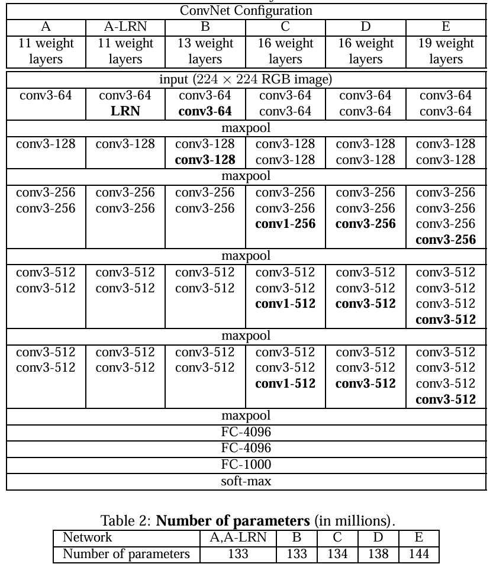vgg-block内的卷积层都是同结构的，池化层都得上一层的卷积层特征缩减一半，深度较深，参数量够大，较小的filter size/kernel size
VGG大量使用了3 x 3 的卷积核，参数很小而且效果还不错。
还有VGG使用了块状结构，相当于一个小单元，非常方便。
模型
class VGG16(nn.Module):
def __init__(self):
super(VGG16, self).__init__()
self.block1 = nn.Sequential(
nn.Conv2d(1, 64, kernel_size=3, padding=1),
nn.ReLU(),
nn.Conv2d(64, 64, kernel_size=3, padding=1),
nn.ReLU(),
nn.MaxPool2d(kernel_size=2, stride=2)
)
self.block2 = nn.Sequential(
nn.Conv2d(64, 128, kernel_size=3, padding=1),
nn.ReLU(),
nn.Conv2d(128, 128, kernel_size=3, padding=1),
nn.ReLU(),
nn.MaxPool2d(kernel_size=2, stride=2)
)
self.block3 = nn.Sequential(
nn.Conv2d(128, 256, kernel_size=3, padding=1),
nn.ReLU(),
nn.Conv2d(256, 256, kernel_size=3, padding=1),
nn.ReLU(),
nn.Conv2d(256, 256, kernel_size=3, padding=1),
nn.ReLU(),
nn.MaxPool2d(kernel_size=2, stride=2)
)
self.block4 = nn.Sequential(
nn.Conv2d(256, 512, kernel_size=3, padding=1),
nn.ReLU(),
nn.Conv2d(512, 512, kernel_size=3, padding=1),
nn.ReLU(),
nn.Conv2d(512, 512, kernel_size=3, padding=1),
nn.ReLU(),
nn.MaxPool2d(kernel_size=2, stride=2)
)
self.block5 = nn.Sequential(
nn.Conv2d(512, 512, kernel_size=3, padding=1),
nn.ReLU(),
nn.Conv2d(512, 512, kernel_size=3, padding=1),
nn.ReLU(),
nn.Conv2d(512, 512, kernel_size=3, padding=1),
nn.ReLU(),
nn.MaxPool2d(kernel_size=2, stride=2)
)
self.block6 = nn.Sequential(
nn.Flatten(),
nn.Linear(512 * 7 * 7, 4096),
nn.ReLU(),
nn.Linear(4096, 4096),
nn.ReLU(),
nn.Linear(4096, 10)
)
def forward(self, x):
x = self.block1(x)
x = self.block2(x)
x = self.block3(x)
x = self.block4(x)
x = self.block5(x)
x = self.block6(x)
return x
最佳实践——权重初始化
在我们训练的时候，我们的模型可能不收敛，训练出来的结果图很难看，实际上大概率可能是出现了梯度消失问题，核心原因是我们的权重初始化过于随机了。
为什么权重初始化如此重要？
在深度神经网络中，权重初始化直接影响：
- 激活值的分布（前向传播）
- 梯度的大小和稳定性（反向传播）
- 模型是否收敛、收敛速度、最终性能
如果权重初始化不当，比如：
- 权重太小 → 激活值趋近于0 → 梯度消失
- 权重太大 → 激活值饱和 → 梯度爆炸
所以我们必须要引入权重初始化！
何凯明 - 凯明初始化法
凯明初始化法（Kaiming Initialization），又称 He 初始化，由 何恺明（Kaiming He） 在 2015 年提出，专为 ReLU 及其变种（如 LeakyReLU） 设计的权重初始化方法。
for param in self.modules():
if isinstance(param, nn.Conv2d):
nn.init.kaiming_normal_(param.weight, nonlinearity='relu')
if param.bias is not None:
nn.init.constant_(param.bias, 0)
for param in self.modules():
# 卷积层初始化
if isinstance(param, nn.Conv2d):
nn.init.kaiming_normal_(param.weight, nonlinearity='relu')
if param.bias is not None:
nn.init.constant_(param.bias, 0)
# 全连接层初始化
elif isinstance(param, nn.Linear):
nn.init.normal_(param.weight, 0, 0.01)
if param.bias is not None:
nn.init.constant_(param.bias, 0)
以上可以放在：
class VGG16_init(nn.Module):
def __init__(self):
super(VGG16, self).__init__()
初始化函数之下。
最佳实践——调整批次
在深度学习中，调整批次大小（Batch Size） 是最有效、最低成本的性能调优手段之一。“最佳实践”不是越大越好，也不是越小越精，而是根据硬件、任务、训练阶段动态权衡。
GoogLeNet网络原理
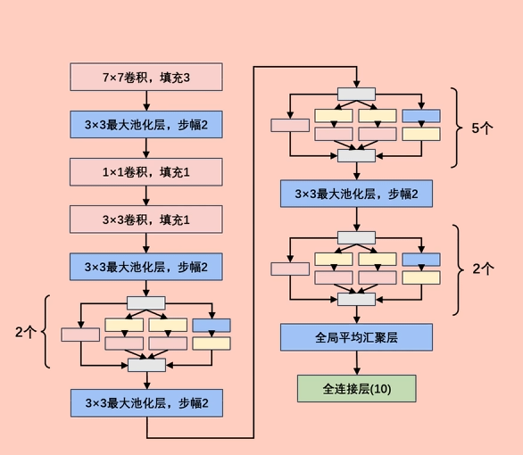这里面最唬人的地方就是这个Inception块，实际上没有那么吓人。
以前流行的网络使用小到1×1，大到7×7的卷积核。 本文的一个观点：有时使用不同大小的卷积核组合是有利的。
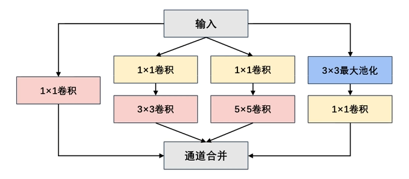通道合并 ：将四个路线输出的通道合并。
1 x 1卷积的优点
**在不改变空间结构的前提下，高效地融合通道信息、调整通道维度、引入非线性，从而提升模型表达能力并降低计算成本。**实现跨通道的交互和信息整合，卷积核通道数的降维和升维，减少网络参数。
全局平均池化GAP
优点：“无参降维+抗过拟合”——把特征图全局平均成单个数值，直接当分类 logits，省掉全连接层，大幅减少参数量且强制保留通道级语义，降低过拟合风险。
缺点：“丢细节+强假设”——空间信息被压成一点，对细粒度特征或目标定位任务无能为力，并隐含“通道即类别”的假设，若类别间特征重叠则易混淆。
注意区别：全局平均池化GAP 与直接Flatten平展的区别
如何训练自己的数据集
在深度学习中，设计一个良好的模型需要基础知识与运气，在此基础之上，数据的预处理往往是拉开差距的关键点。
数据集的划分
如何将这样的数据目录：
data_cat_dog
├── cat
└── dog
变成：
data
├── train
│ ├── cat
│ └── dog
└── test
├── cat
└── dog
有这样的脚本：
import os
from shutil import copy
import random
def mkfile(file):
if not os.path.exists(file):
os.makedirs(file)
# 获取data文件夹下所有文件夹名（即需要分类的类名）
file_path = 'data_cat_dog'
flower_class = [cla for cla in os.listdir(file_path)]
# 创建 训练集train 文件夹，并由类名在其目录下创建5个子目录
mkfile('data/train')
for cla in flower_class:
mkfile('data/train/' + cla)
# 创建 验证集val 文件夹，并由类名在其目录下创建子目录
mkfile('data/test')
for cla in flower_class:
mkfile('data/test/' + cla)
# 划分比例，训练集 : 测试集 = 9 : 1
split_rate = 0.1
# 遍历所有类别的全部图像并按比例分成训练集和验证集
for cla in flower_class:
cla_path = file_path + '/' + cla + '/' # 某一类别的子目录
images = os.listdir(cla_path) # iamges 列表存储了该目录下所有图像的名称
num = len(images)
eval_index = random.sample(images, k=int(num * split_rate)) # 从images列表中随机抽取 k 个图像名称
for index, image in enumerate(images):
# eval_index 中保存验证集val的图像名称
if image in eval_index:
image_path = cla_path + image
new_path = 'data/test/' + cla
copy(image_path, new_path) # 将选中的图像复制到新路径
# 其余的图像保存在训练集train中
else:
image_path = cla_path + image
new_path = 'data/train/' + cla
copy(image_path, new_path)
print("\r[{}] processing [{}/{}]".format(cla, index + 1, num), end="") # processing bar
print()
print("processing done!")
数据的预处理
重调整
transforms.Resize(160)
或
transforms.Resize((160,160))
第一个是的比例裁剪，第二个是指定像素裁剪，他们都是重调整。
随机裁剪
transforms.RandomResizedCrop(128, scale=(0.8, 1.0))
先随机在原图里裁出一块面积占 80 %–100 % 的区域，再直接 resize 成 128×128，既做了随机裁剪又做了尺度增强。
原始数据增强
transforms.AutoAugment(transforms.AutoAugmentPolicy.IMAGENET),
自动从 ImageNet 预训练好的 25 种增强策略里，随机挑一条子策略（含 5 种强度可变的图像变换）作用到输入图上，属于“自动数据增强”里的经典算法，无需手工设计组合。
- 策略搜索阶段用强化学习在 ImageNet 上离线搜出 25 条子策略（每条含 5 个变换）。
- 每次训练迭代时：
- 随机选一条子策略；
- 按该子策略里指定的概率、幅度依次对图像做 5 次变换；
- 变换列表包括
ShearX/Y,TranslateX/Y,Rotate,Color,Posterize,Solarize,Contrast,Sharpness,Brightness,AutoContrast,Equalize等。
标准化
transforms.ToTensor()
本身就具有归一化的功能，他将数值转化为0-1的区间，但这只是“线性缩放”，不是真正意义上的“标准化 (normalization)”。
transforms.Normalize([0.485, 0.456, 0.406], [0.229, 0.224, 0.225])
这才是真正的标准化：把数值变成均值为 0、方差为 1 的分布，加速模型收敛。
怎么算呢？还是来一个预处理。
from PIL import Image
import os
import numpy as np
# 文件夹路径，包含所有图片文件
folder_path = 'data_cat_dog'
# 初始化累积变量
total_pixels = 0
sum_normalized_pixel_values = np.zeros(3) # 如果是RGB图像，需要三个通道的均值和方差
# 遍历文件夹中的图片文件
for root, dirs, files in os.walk(folder_path):
for filename in files:
if filename.endswith(('.jpg', '.jpeg', '.png', '.bmp')):
image_path = os.path.join(root, filename)
image = Image.open(image_path)
image_array = np.array(image)
# 归一化像素值到0-1之间
normalized_image_array = image_array / 255.0
# 累积归一化后的像素值和像素数量
total_pixels += normalized_image_array.size
sum_normalized_pixel_values += np.sum(normalized_image_array, axis=(0, 1))
# 计算均值和方差
mean = sum_normalized_pixel_values / total_pixels
sum_squared_diff = np.zeros(3)
for root, dirs, files in os.walk(folder_path):
for filename in files:
if filename.endswith(('.jpg', '.jpeg', '.png', '.bmp')):
image_path = os.path.join(root, filename)
image = Image.open(image_path)
image_array = np.array(image)
# 归一化像素值到0-1之间
normalized_image_array = image_array / 255.0
try:
diff = (normalized_image_array - mean) ** 2
sum_squared_diff += np.sum(diff, axis=(0, 1))
except:
print(f"捕获到自定义异常")
variance = sum_squared_diff / total_pixels
print("Mean:", mean)
print("Variance:", variance)
随机擦除
transforms.RandomErasing(p=0.3, scale=(0.02, 0.2))
以 30 % 的概率在图像上随机挖掉一块矩形区域（面积占图 2 %–20 %），用随机值（灰色、白色或黑色）填平，迫使模型学会“靠局部也能猜对”，属于简单的正则化/抗遮挡增强。
ResNet原理与实战
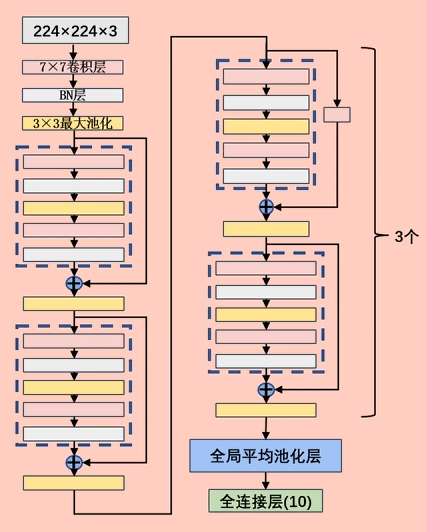网络持续加深带来那些问题
一、优化难题：网络越深越“学不动”
二、表达难题：网络越深越“记不住”
三、工程难题：网络越深越“养不起”
“深”本身不是错，错的是深+ Plain 堆叠；，
Plain Network = 只有“卷积–BN–ReLU”一路串行下去，不带任何跳跃连接的直筒式架构。
“链式求导”本身就是根源——但要把话拆成两句说：
- 链式求导必然导致深度网络里的梯度是“连乘”形式；
- 连乘的因子一旦持续小于 1（或大于 1），层数一多就指数级衰减 / 爆炸，这就是梯度消失/爆炸的数学本质。
所以 Plain Net 的退化问题虽然表现形式是“越深层训练误差越大”，但底层机制仍然绕不开链式求导带来的数值不稳定。
ResNet 的 skip connection 正是人为在链式乘积里插进一项 1，把“连乘”改写成“连乘 + 1”，从而打断指数衰减——用加法给链式法则打了一个补丁。
残差块
ResNet（Residual Network）的核心创新就是残差连接（Residual Connection），它解决了深层网络的梯度消失问题，使得训练非常深的网络成为可能。
残差块的设计是深度学习领域的重大突破，它不仅在图像识别任务中表现出色，还被广泛应用于各种深度学习架构中。a = h(x) + x
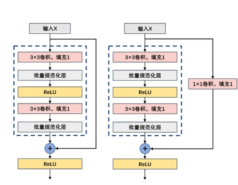上图有一个错误，填充应该是0，步幅是1。
Batch Normalization归一化
Batch Normalization（批归一化，简称BN） 的目的是 让神经网络训练更快、更稳定、更容易收敛。
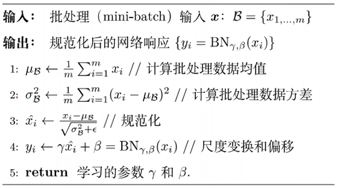BatchNorm 不是“锦上添花”，而是“深度网络能训得动”的刚需——它把每层的输入分布强行拉回 N(0,1)，切断梯度消失/爆炸与内部协变量偏移的恶性循环，让链式求导的连乘因子始终落在 1 附近，于是非常深的 Plain/ResNet 才吃得下大学习率、快速收敛且不用特别精调初始化。
BN的解决方案非常直观有力：既然层输入的分布老在变，那我们就强制把它拉回一个稳定、标准的分布。
BN的位置通常放在：
全连接层/卷积层 → BatchNorm → 激活函数(ReLU等)
ResNet的基本实现
残差块
class ResidualBlock(nn.Module):
def __init__(self, in_channels, out_channels, use_conv1x1=False, stride=1) -> None:
super(ResidualBlock).__init__()
self.RelU = nn.ReLU(inplace=True)
self.conv1 = nn.Conv2d(in_channels=in_channels, out_channels=out_channels, kernel_size=3, stride=stride,
padding=1)
self.conv2 = nn.Conv2d(in_channels=out_channels, out_channels=out_channels, kernel_size=3, stride=stride,
padding=1)
self.BN1 = nn.BatchNorm2d(out_channels)
self.BN2 = nn.BatchNorm2d(out_channels)
if use_conv1x1:
self.conv3 = nn.Conv2d(in_channels=in_channels, out_channels=out_channels, kernel_size=stride,
stride=stride, padding=0)
else:
self.conv3 = None
def forward(self, x):
y = self.RelU(self.BN1(self.conv1(x)))
y = self.BN2(self.conv2(y))
if self.conv3 is not None:
x = self.conv3(x)
y = self.RelU(y + x)
return y
ResNet18
class ResNet18(nn.Module):
def __init__(self, ResidualBlock) -> None:
super(ResNet18, self).__init__()
self.b1 = nn.Sequential(
nn.Conv2d(in_channels=1, out_channels=64, kernel_size=7, stride=2, padding=3),
nn.BatchNorm2d(64),
nn.ReLU(inplace=True),
nn.MaxPool2d(kernel_size=3, stride=2, padding=1)
)
self.b2 = nn.Sequential(
ResidualBlock(64, 64, use_conv1x1=False, stride=1),
ResidualBlock(64, 64, use_conv1x1=False, stride=1)
)
self.b3 = nn.Sequential(
ResidualBlock(64, 128, use_conv1x1=True, stride=2),
ResidualBlock(128, 128, use_conv1x1=False, stride=1)
)
self.b4 = nn.Sequential(
ResidualBlock(128, 256, use_conv1x1=True, stride=2),
ResidualBlock(256, 256, use_conv1x1=False, stride=1)
)
self.b5 = nn.Sequential(
ResidualBlock(256, 512, use_conv1x1=True, stride=2),
ResidualBlock(512, 512, use_conv1x1=False, stride=1)
)
self.b6 = nn.Sequential(
nn.AdaptiveAvgPool2d((1, 1)),
nn.Flatten(),
nn.Linear(512, 10)
)
def forward(self, x):
x = self.b1(x)
x = self.b2(x)
x = self.b3(x)
x = self.b4(x)
x = self.b5(x)
x = self.b6(x)
return x